Partiamo da Plagnis e seguiamo la mulattiera (traccia nera sulla Tabacco) che passando per la Forcje arriva, in circa 2h, al Plan da le Frate. Molto più bella e ben tenuta del sentiero CAI 427; l'unica pecca è che nei prati del Plan da le Frate la traccia scompare, quindi non è immediato trovarla in discesa (utili gli ometti).
In foto il pittoresco attraversamento del rio dell'Orso.
In breve arriviamo sotto la forcella, dove la traccia ancora evidente dell'ex-CAI 427a si stacca verso sinistra. I mughi stavano invadendo il sentiero e i nostri seghetti non sono rimasti nello zaino.
L'ambiente diventa subito molto selvaggio; meriterebbe tornare per provare a percorrere l'ex CAI 427a fino alla forcella di Sot Cretis.
 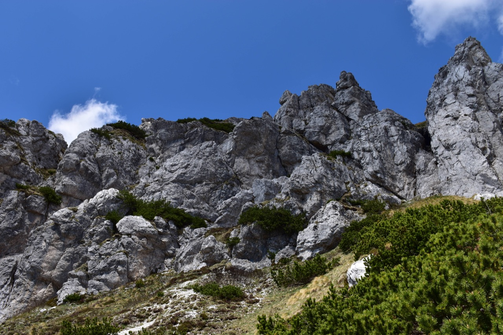
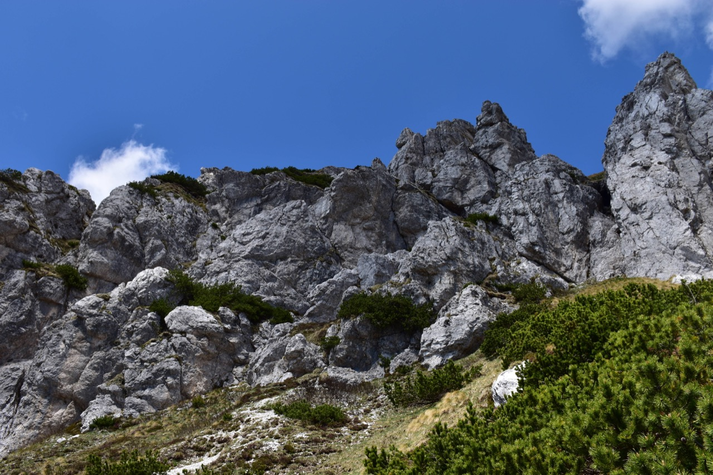
Individuiamo subito il canalino chiave (l'unico abbordabile) che permette di salire ai ripidissimi prati sommitali. L'uscita è di II° grado, sbucando su prati ripidi, impegnativo in discesa.
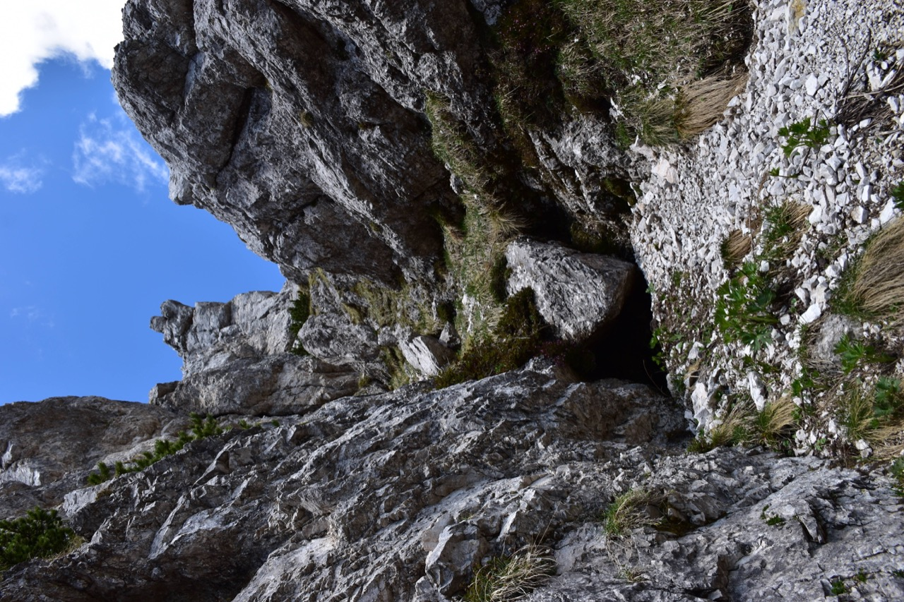Dallo spallone sovrastante il canalino si segue una cengia che aggira il costone.
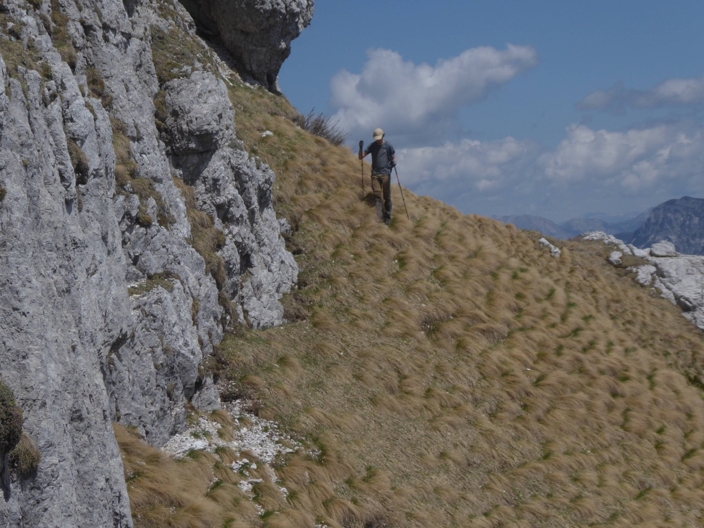 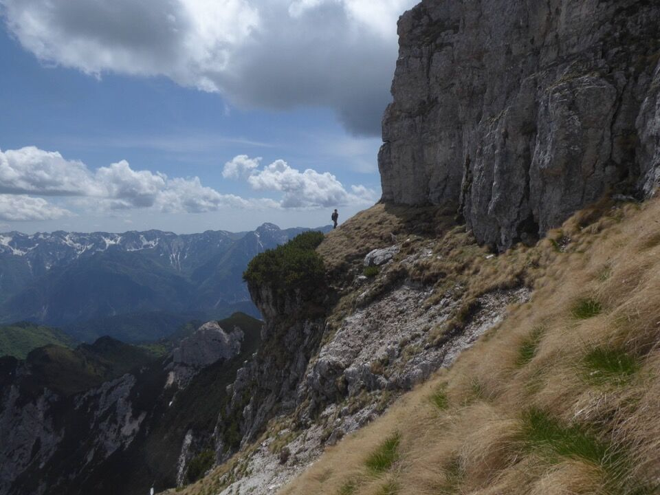Infine per prati ripidissimi in cima, dret par dret.
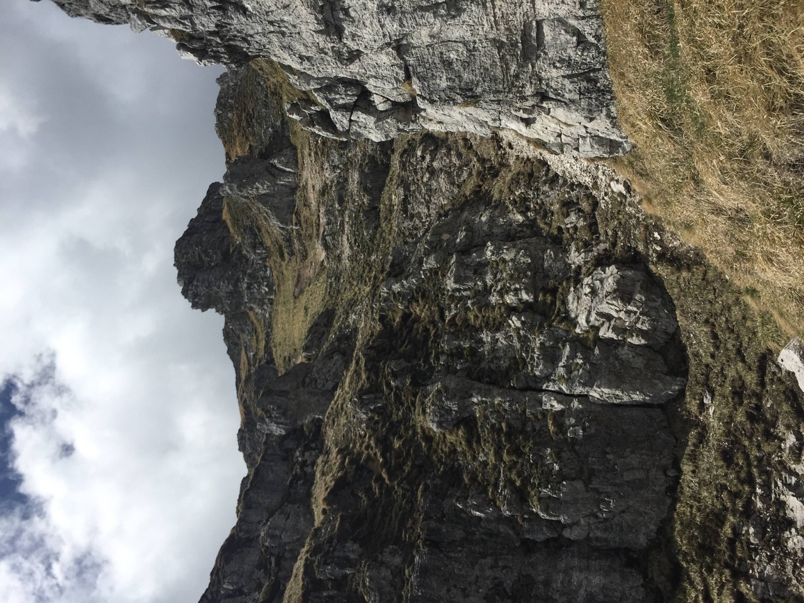Foto con la croce di vetta; c'è una bella cassetta per il libro di vetta, che purtroppo mancava. Abbiamo lasciato un foglio ed una penna, sarebbe opportuno portare su un libretto.
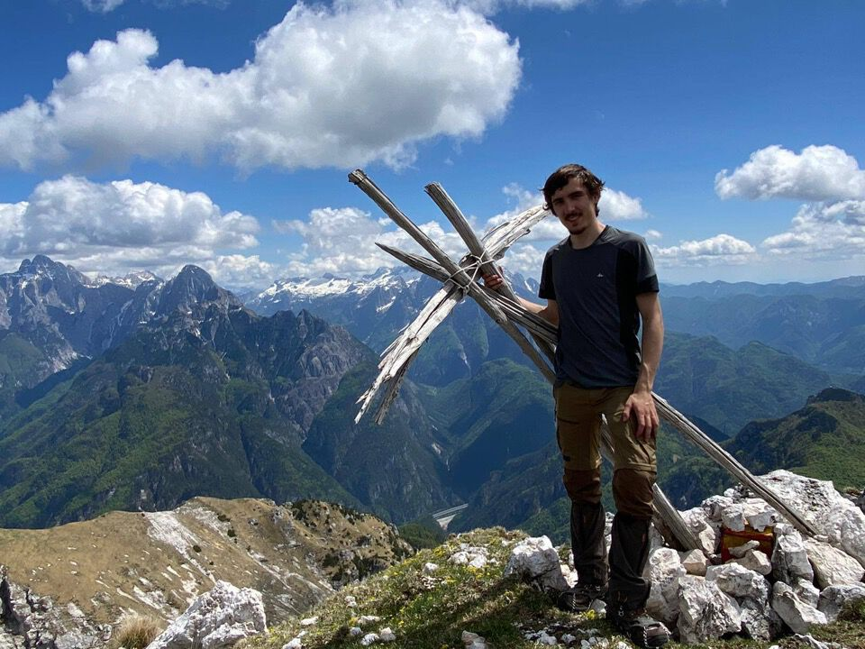Dalla cima verso il vallone del riu Simòn: si vede bene il ricovero militare Sot Cretis.
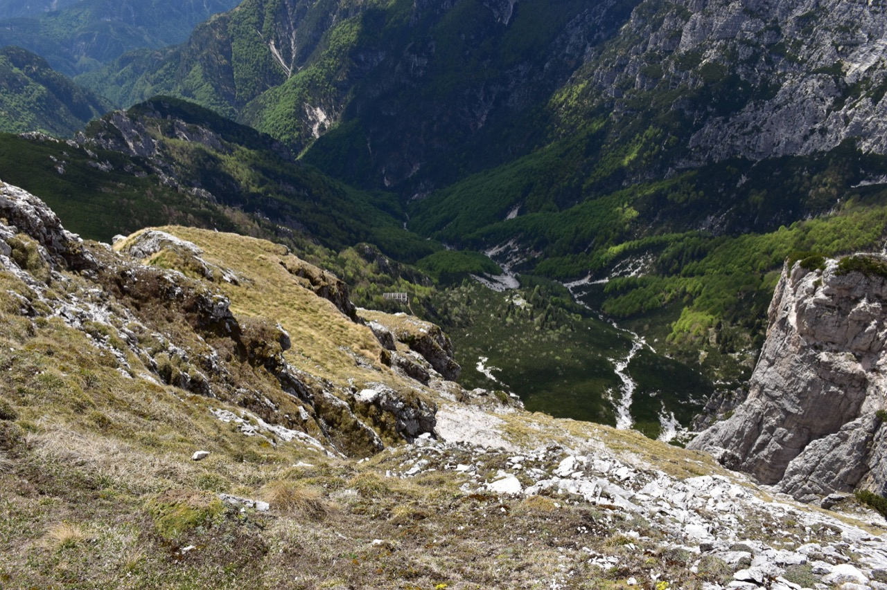Verso la cima Nord-Ovest, sovrapposta al Çuc dal Bôr; sullo sfondo a destra il Cjavâlz. Non è che mi sia proprio tanto chiaro per dove passi la "ex via normale" al Cozarèl Nord-Ovest...
Splendida vista verso la val Dogna! In basso il Montusel.
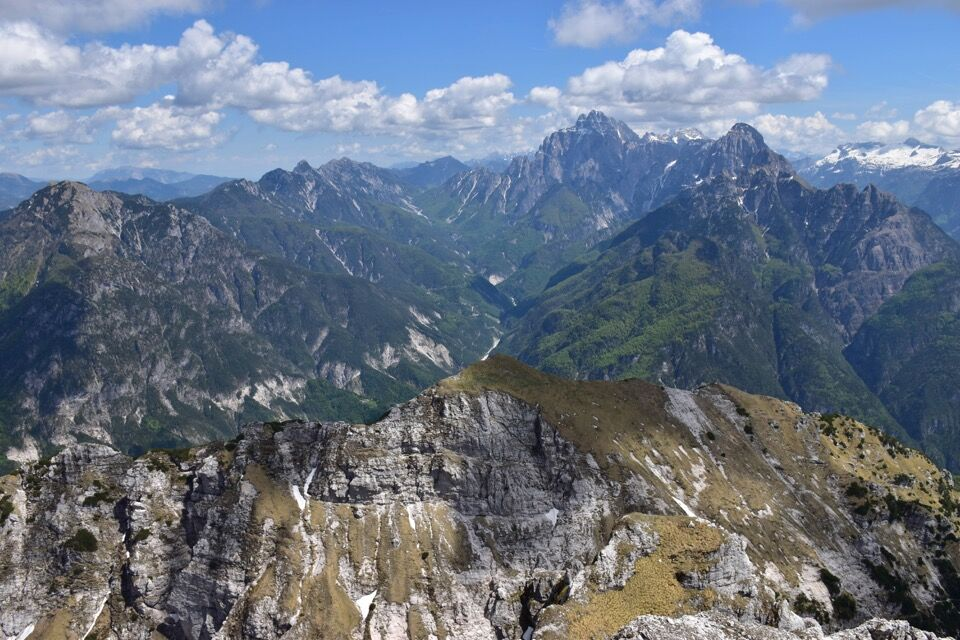Il sottogruppo del Cimone: si notano in particolare lo Jôf di Miezdì (o di Cjadramaç) e lo Jovet Blanc. Il vallone al centro è quello del rio Lavinâl, mentre quello più a destra è il rio da lis Fontanis. Ben evidenti la cengia del troi da le Male Làvare, l'inizio della Sèmide dai Agnei e il Plan de la Cjavile. Zoomando si vede addirittura la traccia del troi dai perons de l'Aneit!
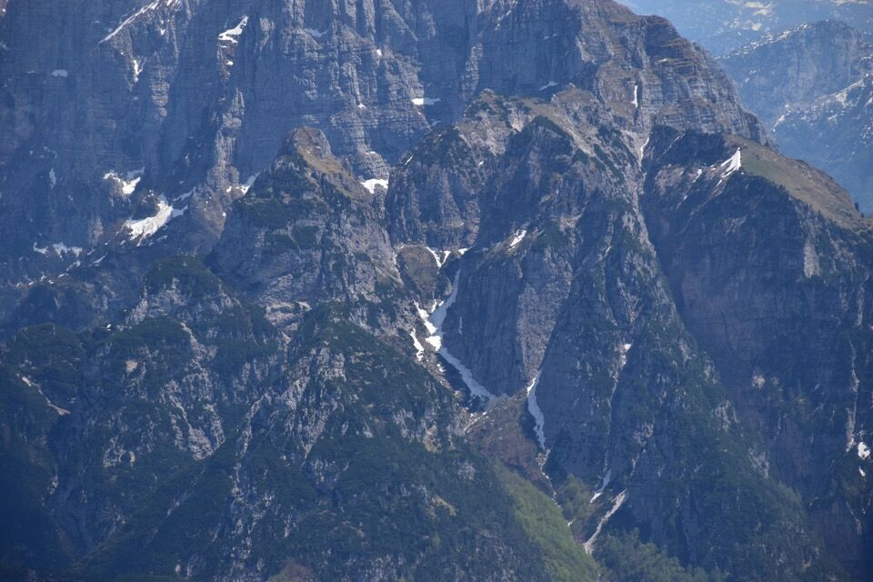Torniamo indietro; Torgul è davvero un luogo paradisiaco.
Le due cime sullo sfondo sono lo Jovet Blanc a sx e il Jovet a dx; il profondo vallone in mezzo è quello del rio da lis Fontanis.
Il rio Lavinâl, con lo Jôf di Miezdì a sx e lo Jovet Blanc a dx; fra i due la forca del Lavinâl (quella col torrione in mezzo), valico alpinistico fra i rii Lavinâl e Sfonderât, percorso per la prima (e unica?) volta da Dougan. Fa paura solo leggere la relazione sul Buscaini (27a)!
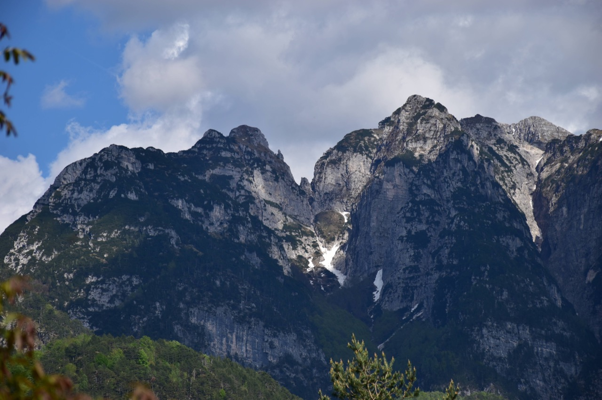